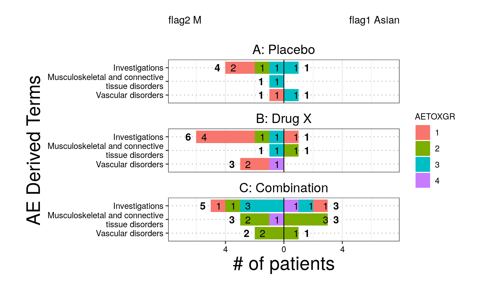

g_butterfly.RdThe butterfly plot is often used in Early Development (ED) and is an opposed barplot that shows instances of AEs or # of patients by category separated by a dichotomization variable. Each bar can be color coded according to a variable of choice and sorted according to either alphabetical order or the maximum count.
g_butterfly( category, right_flag, left_flag, id = NULL, group_names = NULL, block_count = "# of patients", block_color = NULL, facet_rows = NULL, x_label = block_count, y_label = "AE Derived Terms", legend_label = "AETOXGR", sort_by = "alphabetical", show_legend = TRUE )
| category | vector of y values |
|---|---|
| right_flag | vector of 1/0 represents right side of barplot |
| left_flag | vector of 1/0 represents left side of barplot |
| id | unique subject identifier variable. |
| group_names | string vector of length 2 with desired names of dichotomization variables required format : first name corresponds to the name of the right side second name corresponds to name of the left side default: will extract column names from group |
| block_count | string - what to count by (ex: # of AEs or # of patients) |
| block_color | vector - color coding of bar segments |
| facet_rows | vector defines what variable is used to split the plot into rows, default here is NULL |
| x_label | string of text for x axis label, default is block_count |
| y_label | string of text for y axis label, default is AE Derived Terms |
| legend_label |
|
| sort_by | character string that defines the ordering of the class and term variables in the output table, options: "alphabetical", "count", "left", "right", default here is set to "count" |
| show_legend | boolean of whether color coding legend is included, default here is FALSE |
ggplot object
there is no equivalent STREAM output
library(dplyr) ADSL <- rADSL %>% select(USUBJID, STUDYID, SEX, ARM, RACE) %>% dplyr::filter(SEX %in% c("F", "M")) AAE <- rADAE %>% select(USUBJID, STUDYID, AEBODSYS, AETOXGR) ANL <- left_join(AAE, ADSL, by = c("STUDYID", "USUBJID")) ANL <- ANL %>% dplyr::mutate(flag1 = ifelse(RACE == "ASIAN", 1, 0)) %>% dplyr::mutate(flag2 = ifelse(SEX == "M", 1, 0)) ANL <- na.omit(ANL) ANL <- ANL %>% dplyr::filter(AEBODSYS %in% c( "Investigations", "Vascular disorders", "Musculoskeletal and connective tissue disorders" )) # Example 1, # of AEs g_butterfly( category = ANL$AEBODSYS, right_flag = ANL$flag1, left_flag = ANL$flag2, group_names = c("flag1 Asian", "flag2 M"), block_count = "# of AEs", block_color = ANL$AETOXGR, id = ANL$USUBJID, x_label = "# of AEs", y_label = "AE Body System", legend_label = "AETOXGR", sort_by = "count", show_legend = TRUE )# Example 2, # of patients with facet g_butterfly( category = ANL$AEBODSYS, right_flag = ANL$flag1, left_flag = ANL$flag2, group_names = c("flag1 Asian", "flag2 M"), block_count = "# of patients", block_color = ANL$AETOXGR, facet_rows = ANL$ARM, id = ANL$USUBJID, x_label = "# of patients", y_label = "AE Derived Terms", legend_label = "AETOXGR", sort_by = "count", show_legend = TRUE )